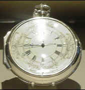
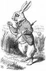
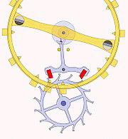

Writing on Communication
in Africa, Leonard Doob observes: "The turban, the sword and nowadays the alarm
clock are worn or carried to signify high rank." Presumably it will be rather long
before the African will watch the clock in order to be punctual.
Time—>Duration—>
Impatience—>Anxiety
"The
Karin put no stock in schedules and timetables and the only date they observed with any
regularity was the arrival of the northeast monsoon; time was an organic living thing, and
they considered the Western practice of dividing the day into fixed units a kind of
endearing lunacy." —Cities on the River
Just as a
great revolution in mathematics came when positional, tandem numbers were discovered (302
instead of 32, and so on), so great cultural changes occurred in the West when it was
found possible to fix time as something that happens between two points. From this
application of visual, abstract, and uniform units came our Western feeling for time as
duration. From our division of time into uniform, visualizable units comes our sense of
duration and our impatience when we cannot endure the delay between events. Such a sense
of impatience, or of time as duration, is unknown among non-literate cultures. Just as work
began with the division of labor, duration begins with the division of time, and
especially with those subdivisions by which mechanical clocks impose uniform succession on
the time sense.
As a piece
of technology, the clock is a machine that produces uniform seconds, minutes, and hours on
an assembly-line pattern. Processed in this
uniform way, time is separated from the rhythms of human experience. The mechanical
clock, in short, helps to create the image of a numerically quantified and mechanically
powered universe. It was in the world of the medieval monasteries, with their need for a
rule and for synchronized order to guide communal life, that the clock got started on its
modern developments. Time measured not by the
uniqueness of private experience but by abstract uniform units gradually pervades all
sense life, much as does the technology of writing and printing. Not only work, but
also eating and sleeping, came to accommodate themselves to the clock rather than to
organic needs. As the pattern of arbitrary and uniform measurement of time extended itself
across society, even clothing began to undergo annual alteration in a way convenient for
industry. At that point, of course, mechanical measurement of time as a principle of
applied knowledge joined forces with printing and assembly line as means of uniform
fragmentation of processes.
Says Marlow of the native escort aboard his Congo River steamer in Heart of Darkness:
"I don't think a single one of them had any clear idea of time, as we at the end of
countless ages have. They still belonged to the beginnings of time—had no inherited
experience to teach them as it were…"

John Harrison's H4 chronometer solved the problem of longitude.
The most
integral and involving time sense imaginable is that expressed in the Chinese and Japanese
cultures. Until the coming of the missionaries in the seventeenth century, and the
introduction of the mechanical clocks, the Chinese and Japanese had for thousands of years
measured time by graduations of incense. Not only the hours and days, but the seasons and
zodiacal signs were simultaneously indicated by a succession of carefully ordered scents.
The sense of smell, long considered the root of memory and the unifying basis of
individuality, has come to the fore again in the experiments of Wilder Penfield. During
brain surgery, electric probing of brain tissue revived many memories of the patients.
These evocations were dominated and unified by unique scents and odors that structured
these past experiences. The sense of smell is not only the most subtle and delicate of the
human senses; it is, also, the most iconic in that it involves the entire human sensorium
more fully than any other sense. It is not surprising, therefore, that highly literate
societies take steps to reduce or eliminate odors from the environment. B.O., the unique
signature and declaration of human individuality, is a bad word in literate societies. It
is far too involving for our habits of detachment and specialist attention. Societies that
measured time scents would tend to be so cohesive and so profoundly unified as to resist
every kind of change.
Time is neither uniform in the subjective sense,
nor in the objective worlld of relativity. According to Einstein's special theory of
relativity, time slows down for moving objects, suggesting the relativity of simultaneity
and the existence of a pluralistic universe composed of local time frames.
Lewis
Mumford has suggested that the clock preceded the printing press in order of influence on
the mechanization of society. But Mumford takes no account of the phonetic alphabet as the
technology that had made possible the visual and uniform fragmentation of time. Mumford,
in fact, is unaware of the alphabet as the source of Western mechanism, just as he is
unaware of mechanization as the translation of society from audile-tactile modes into
visual values. Our new electric technology is organic and nonmechanical in tendency
because it extends, not our eyes, but our central nervous systems as a planetary vesture.
In the space-time world of electric technology, the older mechanical time begins to feel
unacceptable, if only because it is uniform.
In the world of relativity, time slows
down the faster an object moves, and at the speed of light a clock stands still and length
contracts to zero, i.e. both dimensions, time and space, cease to exist, the definition of
human oblivion. In Einstein's world, the position and velocity of the observer are
as important as the object being observed.
Modern
linguistics studies are structural rather than literary, and owe much to the new
possibilities of computers for translation. As soon as an entire language is examined as a
unified system, strange pockets appear.
Looking at the usage scale of English, Martin Joos has wittily designated "five
clocks of style," or five different zones and independent cultural climates. Only one
of these zones is the area of responsibility. This is the zone of homogeneity and
uniformity that ink-browed Gutenberg rules as his domain. It is the style-zone of Standard
English pervaded by Central Standard Time, and within this zone the dwellers, as it were,
may show varying degrees of punctuality.
Organic or Existential Time
Time and space are not uniform 'containers.'
Edward T.
Hall in The Silent Language discusses how "Time Talks: American Accents,"
contrasting our time-sense with that of the Hopi Indians. Time for them is not a uniform
succession or duration, but a pluralism of many kinds of things co-existing. "It is
what happens when the corn matures or a sheep grows up…. It is the natural process that takes place while living
substance acts out its life drama." Therefore, as many kinds of time exist for them
as there are kinds of life. This, also, is the kind of time-sense held by the modern
physicist and scientist. They no longer try to contain events in time, but think of each
thing as making its own time and its own space. Moreover, now that we live electrically in
an instantaneous world, space and time interpenetrate each other totally in a space-time
world. In the same way, the painter, since Cezanne, has recovered the plastic image by
which all of the senses coexist in a unified pattern. Each object and each set of objects
engenders its own unique space by the relations it has among others visually or musically.
When this awareness recurred in the Western world, it was denounced as the merging of all
things in a flux. We now realize that this anxiety was a natural literary and visual
response to the new nonvisual technology.
Electrical phenomena cannot be explained with
conventional vocabulary and, in fact, typical textbook descriptions tend to obfuscate
rather than illuminate the subject.
An analogy highlighting the dynamics of 'interval,'
i.e. the meaning released by the co-location of disparate elements.

"Oh dear! Oh dear! I shall be too late!"
J. Z. Young,
in Doubt and Certainty in Science, explains how electricity is not something that
is conveyed by or contained in anything, but is something that occurs when two or more
bodies are in special positions. Our language derived from phonetic technology cannot cope
with this new view of knowledge. We still talk of electric current "flowing," or
we speak of the "discharge" of electric energy like the lineal firing of guns.
But quite as much as with the esthetic magic of painterly power, "electricity is the
condition we observe when there are certain spatial relations between things." The painter learns how to adjust relations among
things to release new perception, and the chemist and physicist learn how other relations
release other kinds of power. Less and less, in the electric age, can we find any
good reason for imposing the same set of relations on every kind of object or group of
objects. Yet in the ancient world the only means of achieving power was getting a thousand
slaves to act as one man. During the Middle Ages the communal clock extended by the bell
permitted high coordination of the energies of small communities. In the Renaissance the
clock combined with the uniform respectability of the new typography to extend the power
of social organization almost to a national scale. By the nineteenth century it had
provided a technology of cohesion that was inseparable from industry and transport,
enabling an entire metropolis to act almost as an automaton. Now in the electric age of
decentralized power and information we begin to chafe under the uniformity of clock-time.
In this age of space-time we seek multiplicity, rather than repeatability, of rhythms.
This is the difference between marching soldiers and ballet.
It is a
necessary approach in understanding media and technology to realize that when the spell of
the gimmick or an extension of our bodies is new, there comes narcosis or numbing
to the newly amplified area. The complaints about clocks did not begin until the electric
age had made their mechanical sort of time starkly incongruous. In our electric century
the mechanical time-kept city looks like an aggregation of somnambulists and zombies, made
familiar in the early part of T. S. Eliot's The Waste Land.
On a planet
reduced to village size by new media, cities themselves appear quaint and odd, like
archaic forms already overlaid with new patterns of culture. However, when mechanical
clocks had been given great new force and practicality by mechanical writing, as printing
was at first called, the response to the new time sense was very ambiguous and even
mocking. Shakespeare's sonnets are full of the twin themes of immortality of fame
conferred by the engine of print, as well as the petty futility of daily existence as
measured by the clock:
When I doe count the clock that tels the time,
And see the brave day sunck in hidious night….
Then of thy beauty do I question make
That thou among the wastes of time must goe.
(Sonnet X)
In Macbeth,
Shakespeare links the twin technologies of print and mechanical time in the familiar
soliloquy, to manifest the disintegration of Macbeth's world:
Tomorrow, and tomorrow, and tomorrow
Creeps in this petty pace from day to day,
To the last syllable of recorded time.
Time, as
hacked into uniform successive bits by clock and print together, became a major theme of
the Renaissance neurosis, inseparable from the new cult of precise measurement in the
sciences. In Sonnet LX, Shakespeare puts mechanical time at the beginning, and the
new engine of immortality (print) at the end:
Like as the waves make towards the pibled shore,
So do our minuites hasten to their end,
Each changing place with that which goes before,
In sequent toil all forwards do contend….
And yet to times in hope, my verse shall stand
Praising thy worth, dispight his cruell hand.
John Donne's
poem on "The Sun Rising" exploits the contrast between aristocratic and
bourgeois time. The one trait that most damned the bourgeoisie of the nineteenth
century was their punctuality, their pedantic devotion to mechanical-time and sequential
order. As space-time flooded through the gates of awareness from the new electric
technology, all mechanical observance became distasteful and even ridiculous. Donne had
the same ironic sense of the irrelevance of clock-time, but pretended that in the kingdom
of love even the great cosmic cycles of time were also petty aspects of the clock:
Busy
old fool, unruly Sun,
Why dost thou thus
Through windows, and through curtains call on us?
Must to thy motions lovers' seasons run?
Saucy, pedantic wretch, go chide
Late school-boys, and sour prentices,
Go tell Court-huntsmen, that the King will ride,
Call country ants to harvest offices,
Love, all alike, no season knows nor clime,
Nor hours, days, months, which are the rags of time.
Much of
Donne's twentieth-century vogue was due to his challenging the authority of the new
Gutenberg age to invest him with the stigmata of uniform repeatable typography and with
the motives of precise visual measurement. In like manner, Andrew Marvell's "To his
Coy Mistress" was full of contempt for the new spirit of measurement and calculation
of time and virtue:
Had we but world enough and time,
This coyness, lady, were no crime
We would sit down and think which way
To walk, and pass our long love's day….
An hundred years should go to praise
Thine eyes, and on thy forehead gaze;
Two hundred to adore each breast,
But thirty thousand to the rest;
An age at least to every part,
And the last age should show your heart,
For lady, you deserve this state,
Nor would I love at lower rate.
Marvell
merged the rates of exchange with the rates of praise suited to the conventional and
fashionably fragmented outlook of his inamorata. For her box-office approach to reality,
he substituted another time-structure, and a different model of perception. It is not
unlike Hamlet's "Look on this picture and on that." Instead of a quiet bourgeois
translation of the medieval love code into the language of the new middle-class tradesman,
why not a Byronic caper to the farther shores of ideal love?
But at my back I always hear
Time's winged chariot hurrying near;
And yonder all before us lie
Deserts of vast eternity.
Here is the
new lineal perspective that had come to painting with Gutenberg, but that had not entered
the verbal universe until Milton's Paradise Lost. Even written language had
resisted for two centuries the abstract visual order of lineal succession and vanishing
point. The next age after Marvell, however, took to landscape poetry and the subordination
of language to special visual effects.
But Marvell
concluded his reverse strategy for the conquest of bourgeois clock-time with the
observation
Thus, though we cannot make our sun
Stand still, yet we will make him run.
He proposed
that his beloved and he should transform themselves into a cannonball and fire themselves
at the sun to make it run. Time can be defeated, as it were, by reversal of its
characteristics if only it be speeded up enough. Experience of this fact awaited the
electronic age, which found that instant speeds abolish time and space, and return man to
an integral and primitive awareness.
Today not
only clock-time, but the wheel itself, is obsolescent and is retracting into animal form
under the impulse of greater and greater speeds. In the poem above, Andrew Marvell's
intuition that clock-time could be defeated by speed was quite sound. At present the
mechanical begins to yield to organic unity under conditions of electric speeds. Man now
can look back at two or three thousand years of varying degrees of mechanization with full
awareness of the mechanical as an interlude between two great organic periods of culture.
In 1911 the Italian sculptor Boccioni said, "We are primitives of an unknown
culture." Half a century later we know a bit more about the new culture of the
electronic age, and that knowledge has lifted the mystery surrounding the machine.
As
contrasted with the mere tool, the machine is an extension or entering of a process. The
tool extends the fist, the nails, the teeth, the arm. The wheel extends the feet in
rotation or sequential movement. Printing, the first complete mechanization of a
handicraft, breaks up the movement of the hand into a series of discrete steps that are as
repeatable as the wheel is rotary. From this analytic sequence came the assembly-line
principle, but the assembly line is now obsolete in the electric age because
synchronization is no longer sequential. By electric tapes, synchronization of any number
of different acts can be simultaneous. Thus the mechanical principle of analysis in series
has come to an end. Even the wheel has now come to an end in principle, although the
mechanical stratum of our culture carries it still as part of an accumulated momentum, an
archaic configuration.
The modern
clock, mechanical in principle, embodied the wheel. The clock has ceased to have its older
meanings and functions. Plurality-of-times succeeds uniformity-of-time. Today it is only
too easy to have dinner in New York and indigestion in Paris. Travelers also have the
daily experience of being at one hour in a culture that is still 3000 b.c., and at the
next hour in a culture that is 1900 a.d. Most of North American life is, in its externals,
conducted on nineteeth-century lines. Our inner experience, increasingly at variance with
these mechanical patterns, is electric, inclusive, and mythic in mode. The mythic or
iconic mode of awareness substitutes the multi-faceted for point-of-view.
It is natural, and perhaps even unavoidable, for
us to express time in visual or spatial terms, e.g. the hours and minutes in the
divisions of a clock face or sundial; and to block out the days and months on calendar
pages. For example, when our schedule is full we say it is 'chock-a-block.' Conversely, we
express our experience of deep space in light years, and of local space in terms of our
commute. E.g., "I live an hour from work."
It is questionable whether the
interruption of the natural circadian rhythms with an artificial and regimented work
routine results in any enduring efficiency at all, and is on the contrary an unsustainable
tour de force: 'Things fall apart; the centre cannot hold.'
Historians
agree on the basic role of the clock in monastic life for the synchronization of human
tasks. The acceptance of such fragmenting of life into minutes and hours was unthinkable,
save in highly literate communities. Readiness to submit the human organism to the alien
mode of mechanical time was as dependent upon literacy in the first Christian centuries as
it is today. For the clock to dominate, there
has to be the prior acceptance of the visual stress that is inseparable from phonetic
literacy. Literacy is itself an abstract asceticism that prepares the way for
endless patterns of privation in the human community. With universal literacy, time can
take on the character of an enclosed or pictorial space that can be divided and
subdivided. It can be filled-in. "My schedule is filled up." It can be kept
free: "I have a free week next month." And as Sebastian de Grazia has shown in Of
Time, Work and Leisure, all the free time in the world is not leisure, because leisure
accepts neither the division of labor that constitutes "work," nor the divisions
of time that create "full time" and "free time." Leisure excludes
times as a container. Once time is mechanically or visually enclosed, divided, and filled,
it is possible to use it more and more efficiently. Time can be transformed into a
labor-saving machine, as Parkinson reveals in his famous "Parkinson's Law."

Inline or Swiss lever escapement
The student
of the history of the clock will find that a totally new principle entered with the
invention of the mechanical clock. The earliest mechanical clocks had retained the old
principle of the continuous action of the driving force, such as was used in the water
clock and in the water wheel. It was about 1300 a.d. that the step was taken of
momentarily interrupting rotary movement by a crown rod and balance wheel. This function
was called "escapement" and was the means of literally translating the
continuous force of the wheel into the visual principle of uniform but segmented
succession. Escapement introduced the reciprocal reversing action of the hands in rotating
a spindle forward and backward. The meeting in the mechanical clock of this ancient
extension of hand movement with the forward rotary motion of the wheel was, in effect, the
translation of hands into feet, and feet into hands. Perhaps no more difficult
technological extension of interinvolved bodily appendages could be found. The source of
the energy of the clock was thus separated from the hands, or the source of information,
by technological translation. Escapement as a translation of one kind of wheel space into
uniform and visual space is thus a direct anticipation of the infinitesimal calculus that
translates any kind of space or movement into a uniform, continuous, and visual space.
Parkinson's Law: Work expands so as to fill
the time available for its completion. Though he didn't realize it, Parkinson was
announcing the arrival of the information age, a meritocracy based on the authority of
knowledge.
Parkinson,
sitting on the fence between the mechanical and the electric uses of work and time, is
able to provide us with real entertainment by simply squinting, now with one eye, now with
the other, at the time and work picture. Cultures like ours, poised at the point of
transformation, engender both tragic and comic awareness in great abundance. It is the maximal interplay of diverse forms of
perception and experience that makes great the cultures of the fifth century b.c., the
sixteenth century, and the twentieth century. But few people have enjoyed living in
these intense periods when all that ensures familiarity and security dissolves and is
reconfigured in a few decades.
The evolution of the idea of a golden era from
the past grew out of abstract mechanical time. Before mechanical time and its measurement,
man had no inclination to excavate, mimic, dream of, and embroider with fancy, the
historical past.
A consciousness of time made men aware of their own period and it was
natural to compare it with those that preceded it.
The expression 'out of fashion' implies a world with a premium on novelty. People tire
of the old and find refreshment in the new, regardless of intrinsic value.
As coordinators of human association clocks accelerate the pace of human creativity.
It was not
the clock, but literacy reinforced by the clock, that created abstract time and led men to
eat, not when they were hungry, but when it was "time to eat." Lewis
Mumford makes a telling observation when he says that the abstract mechanical time-sense of the
Renaissance enabled men to live in the classical past, and to tear themselves out of their
own present. Here again, it was the printing press that made possible the
re-creation of the classic past by mass production of its literature and texts. The
establishment of a mechanical and abstract time pattern soon extends itself to
periodic alteration of clothing styles, much in the same way that mass production extends
itself to periodic publication of newspapers and magazines. Today we take for granted that
the job of Vogue magazine is to alter the dress styles as part of the process of
its being printed at all. When a thing is current, it creates currency; fashion creates
wealth by moving textiles and making them ever more current. This process we have seen at
work in the section on "Money." Clocks are mechanical media that transform tasks
and create new work and wealth by accelerating the pace of human association. By
coordinating and accelerating human meetings and goings-on, clocks increase the sheer
quantity of human exchange.
It is not
really incongruous, therefore, when Mumford associates "the clock and the printing
press and the blast furnace" as the giant innovations of the Renaissance. The clock,
as much as the blast furnace, speeded the melting of materials and the rise of smooth
conformity in the contours of social life. Long before the industrial revolution of the
later eighteenth century, people complained that society had become a "prose
machine" that whisked them through life at a dizzy pace.
The circadian rhythms (Latin circa,
"around," and diem or dies, "day")
The clock dragged man out of the world of
seasonal rhythms and recurrence, as effectively as the alphabet had released him from the
magical resonance of the spoken word and the tribal trap. This dual translation of
the individual out of the grip of Nature and out of the clutch of the tribe was not
without its own penalties. But the return to Nature and the return to the tribe are under
electric conditions, fatally simple. We need beware of those who announce programs for
restoring man to the original state and language of the race. These crusaders have never
examined the role of media and technology in tossing man about from dimension to
dimension. They are like the somnambulistic African chief with the alarm clock strapped to
his back.
Mircea
Eliade, professor of comparative religion, is unaware, in The Sacred and the Profane, that
a "sacred" universe in his sense is one dominated by the spoken word and by
auditory media. A "profane" universe, on the other hand, is one dominated by the
visual sense. The clock and the alphabet, by hacking the universe into visual segments,
ended the music of interrelation. The visual desacralizes the universe and produces the
"nonreligious man of modern societies."
Historically,
however, Eliade is useful in recounting how, before the age of the clock and the time-kept
city, there was for tribal man a cosmic clock and a sacred time of the cosmogony itself.
When tribal man wanted to build a city or a house, or cure an illness, he wound up the
cosmic clock by an elaborate ritual reenactment or recitation of the original process of
creation. Eliade mentions that in Fiji "the ceremony for installing a new ruler is
called 'creation of the world.' " The same drama is enacted to help the growth of
crops. Whereas modern man feels obligated to be punctual and conservative of time, tribal
man bore the responsibility for keeping the cosmic clock supplied with energy. But
electric or ecological man (man of the total field) can be expected to surpass the old
tribal cosmic concern with the Africa within.
Primitive
man lived in a much more tyrannical cosmic machine than Western literate man has ever
invented. The world of the ear is more embracing and inclusive than that of the eye can
ever be. The ear is hypersensitive. The eye is cool and detached. The ear turns man over
to universal panic while the eye, extended by literacy and mechanical time, leaves some
gaps and some islands free from the unremitting acoustic pressure and reverberation.